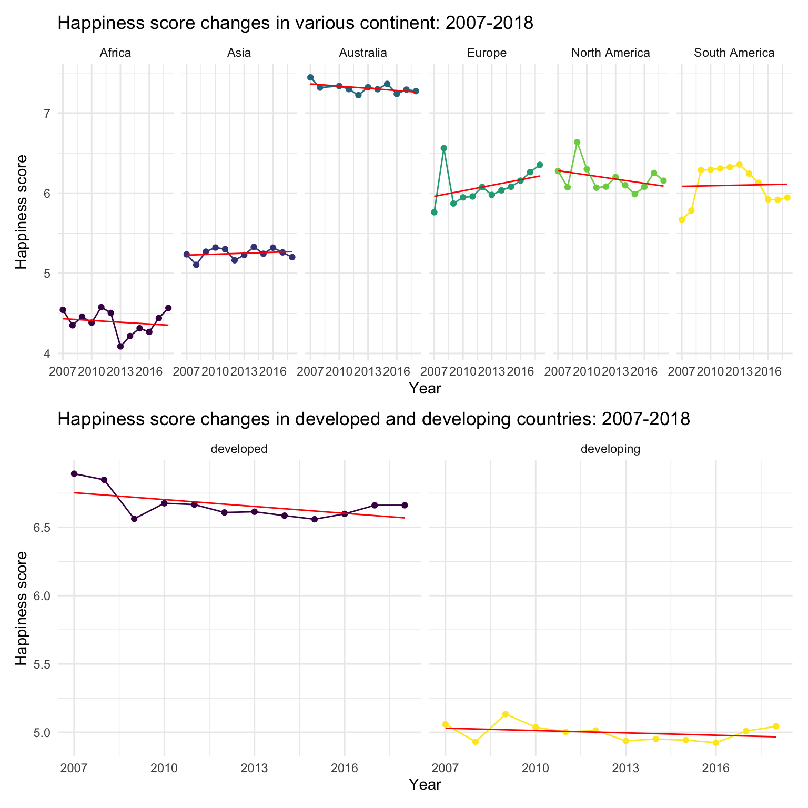
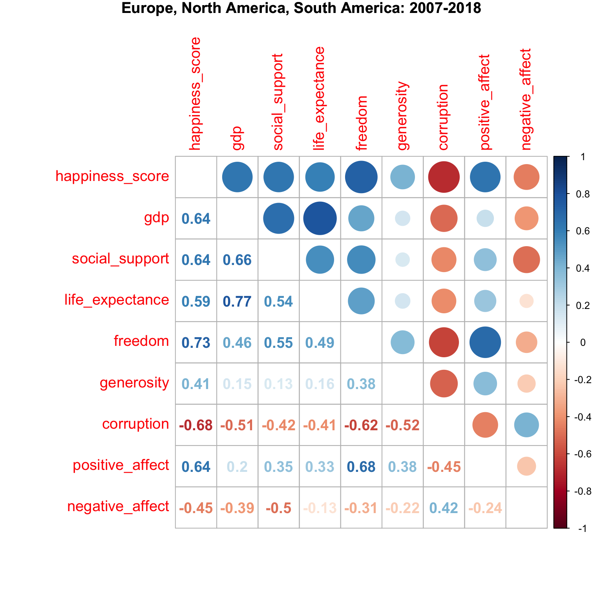
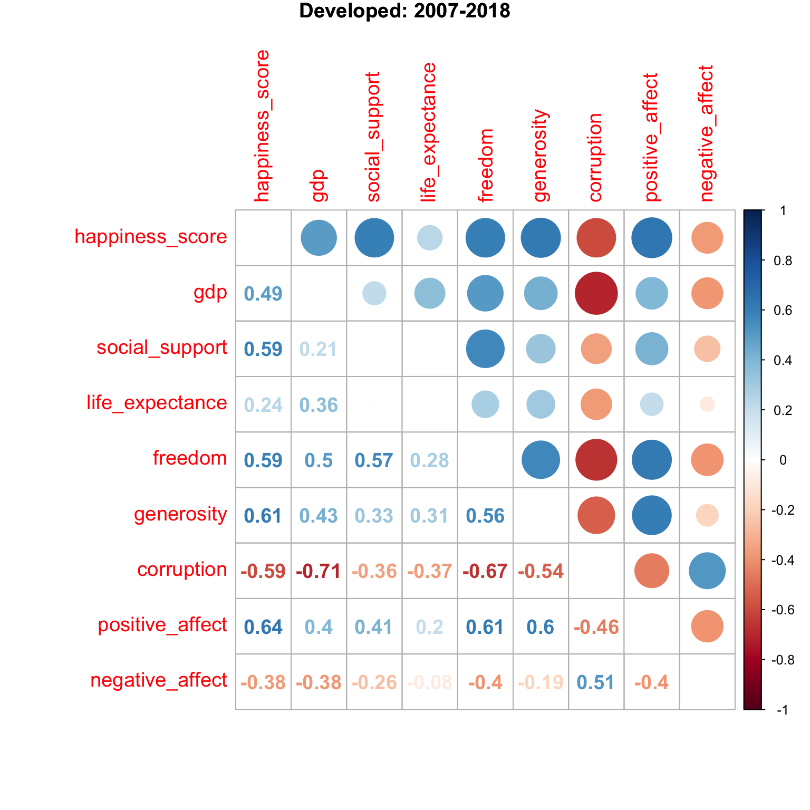

Exploratory Analysis
happy =
read_csv("data/final_data_all_country.csv") %>%
rename( "country" = country_name,
"happiness_score" = life_ladder,
"gdp" = log_gdp_per_capita,
"life_expectance" = healthy_life_expectancy_at_birth,
"freedom" = freedom_to_make_life_choices,
"corruption" = perceptions_of_corruption) %>%
unique() %>%
mutate(o_gdp = exp(gdp)) %>%
mutate(develop = ifelse(o_gdp > 25000, "developed", "developing")) Asia =
c("Israel", "United Arab Emirates", "Singapore", "Thailand", "Taiwan Province of China",
"Qatar", "Saudi Arabia", "Kuwait", "Bahrain", "Malaysia", "Uzbekistan", "Japan",
"South Korea", "Turkmenistan", "Kazakhstan", "Turkey", "Hong Kong S.A.R., China", "Philippines",
"Jordan", "China", "Pakistan", "Indonesia", "Azerbaijan", "Lebanon", "Vietnam",
"Tajikistan", "Bhutan", "Kyrgyzstan", "Nepal", "Mongolia", "Palestinian Territories",
"Iran", "Bangladesh", "Myanmar", "Iraq", "Sri Lanka", "Armenia", "India", "Georgia",
"Cambodia", "Afghanistan", "Yemen", "Syria")
Europe =
c("Norway", "Denmark", "Iceland", "Switzerland", "Finland",
"Netherlands", "Sweden", "Austria", "Ireland", "Germany",
"Belgium", "Luxembourg", "United Kingdom", "Czech Republic",
"Malta", "France", "Spain", "Slovakia", "Poland", "Italy",
"Russia", "Lithuania", "Latvia", "Moldova", "Romania",
"Slovenia", "North Cyprus", "Cyprus", "Estonia", "Belarus",
"Serbia", "Hungary", "Croatia", "Kosovo", "Montenegro",
"Greece", "Portugal", "Bosnia and Herzegovina", "Macedonia",
"Bulgaria", "Albania", "Ukraine")
North_America =
c("Canada", "Costa Rica", "United States", "Mexico",
"Panama","Trinidad and Tobago", "El Salvador", "Belize", "Guatemala",
"Jamaica", "Nicaragua", "Dominican Republic", "Honduras",
"Haiti")
Sorth_America =
c("Chile", "Brazil", "Argentina", "Uruguay",
"Colombia", "Ecuador", "Bolivia", "Peru",
"Paraguay", "Venezuela")
Australia =
c("New Zealand", "Australia")
happy = happy %>%
mutate(continent = case_when(
country %in% Asia ~ "Asia",
country %in% Europe ~ "Europe",
country %in% North_America ~ "North America",
country %in% Sorth_America ~ "South America",
country %in% Australia ~ "Australia",
TRUE ~ as.character("Africa")
))To better show the association of other factors and happiness score, we standardize the value of other factors by subtracting mean and dividing standard error. This is because the scale of gdp and life_expectancy are dramatically different from other factors.
happy_standard = happy %>%
mutate(s_gdp = scale(gdp),
s_social_support = scale(social_support),
s_life_expectance = scale(life_expectance),
s_freedom = scale(freedom),
s_positive_affect = scale(positive_affect),
s_negative_affect = scale(negative_affect),
s_generosity = scale(generosity),
s_corruption = scale(corruption)) %>%
select(-c(gdp:corruption), -o_gdp)Exploratory analysis
Happiness score of all countries changes over time
- Worldwide
plot1 = happy %>%
group_by(year) %>%
summarise(year_mean_score = mean(happiness_score)) %>%
ggplot(aes(x = year, y = year_mean_score)) +
geom_path() +
labs(title = "Happiness score changes worldwide: 2007-2018",
x = "Year",
y = "Happiness score") +
scale_x_continuous(
breaks = c(2007,2008,2009,2010,2011, 2012, 2013,2014,2015,2016,2017,2018))
plot1+transition_reveal(year)
From the first plot, we can easily find that the mean happiness score increases from 2007 to 2010, and gradually decreases to the lowest point in 2014. Finally, it increases in recent years.
- By continent and developing level
plot2 = happy %>%
group_by(year, continent) %>%
summarise(year_mean_score = mean(happiness_score)) %>%
ggplot(aes(x = year, y = year_mean_score, color = continent)) +
geom_point() +
geom_line() +
geom_smooth(method = lm, size = 0.5,
se = FALSE, color = "red") +
facet_grid(. ~ continent) +
labs(title = "Happiness score changes in various continent: 2007-2018",
x = "Year",
y = "Happiness score") +
theme(legend.position = "none")
plot3 = happy %>%
drop_na(develop) %>%
group_by(year, develop) %>%
summarise(year_mean_score = mean(happiness_score)) %>%
ggplot(aes(x = year, y = year_mean_score, color = develop)) +
geom_point() +
geom_line() +
geom_smooth(method = lm, size = 0.5,
se = FALSE, color = "red") +
facet_grid(. ~ develop) +
labs(title = "Happiness score changes in developed and developing countries: 2007-2018",
x = "Year",
y = "Happiness score")+
theme(legend.position = "none")
plot2/plot3
From the second plot, we divide these countries into different regions by the geographic continent. Australia has the overall highest and Africa has the overall lowest happiness score. Only Europe and Asia show the general increasing trend of happiness score over time.
We can roughly further divide these continents into three groups base on the happiness scores. The high happiness score group contains Australis, the medium happiness score group contains Europe, North America and South America, and the low happiness score group contains Africa and Asia.
From the third plot, the mean happiness score is obviously higher in developed countries than it in developing countries.
The correlation plot for happiness score and other factors: worldwide
happy_standard %>%
pivot_longer(s_gdp:s_corruption,
names_to = "standard_factors",
values_to = "standard_value") %>%
ggplot(aes(x = happiness_score, y = standard_value,
color = standard_factors)) +
geom_point() +
geom_boxplot(alpha = .8) +
geom_smooth(method = lm, color = "red") +
facet_grid(. ~ standard_factors) +
labs(x = "Happiness score",
y = "Standard score of other factors",
title = "Happiness score against other factors worldwide: 2007-2018") +
theme(legend.position = "none")
happy %>%
drop_na() %>%
select(-c(country, year, continent, develop,o_gdp)) %>%
cor() %>%
corrplot.mixed(title = "Happiness score against other factors worldwide: 2007-2018",
tl.cex = 1.2, tl.pos = "lt", number.cex = 1.2,
mar = c(0,0,1,0))
From the scatterplot, the factors
negative_affectandcorruptionhave the negative association with happiness score, butgdp,social support,life_expectancy,freedom,positive_affectandgenerosityhave the positive association.From the correlation matrix plot, the happiness score is highly associated with
gdp,social_supportandlife_expectancy(> 0.7). In addition,gdpandlife_expctancyare highly correlated with each other(> 0.7).
The correlation plot for happiness score and other factors : continent
happy %>%
drop_na() %>%
filter(continent == "Australia") %>%
select(-c(country, year, continent, develop,o_gdp)) %>%
cor() %>%
corrplot.mixed(title = "Australia: 2007-2018",
tl.cex = 1.2, tl.pos = "lt", number.cex = 1.2,
mar=c(0,0,1,0))
happy %>%
drop_na() %>%
filter(continent %in% c("Europe", "North America", "South America")) %>%
select(-c(country, year, continent, develop,o_gdp)) %>%
cor() %>%
corrplot.mixed(title = "Europe, North America, South America: 2007-2018",
tl.cex = 1.2, tl.pos = "lt", number.cex = 1.2,
mar = c(0,0,1,0))
happy %>%
drop_na() %>%
filter(continent %in% c("Africa", "Asia")) %>%
select(-c(country, year, continent, develop,o_gdp)) %>%
cor() %>%
corrplot.mixed(title = "Africa, Asia: 2007-2018 ",
tl.cex = 1.2, tl.pos = "lt", number.cex = 1.2,
mar=c(0,0,1,0))
Australia has the highest happiness score, and the score does not have a high correlation with other factors(not greater than 0.4).
gdpis strongly positively associated withcorruption(0.69) and negatively associated withpositive_affe t(-0.86)Europe, North America, South America have the medium happiness score, and the score has a moderate correlation with
gdp,social support,life_expectancy,freedom,positive_affectandcorruption(0.6 - 0.7)Africa and Asia have the lowest happiness score, and the score has a moderate correlation with
gdp,social supportandlife_expectancy(0.6 - 0.7).
The correlation plot for happiness score and othe factors : developing level
happy %>%
drop_na() %>%
filter(develop == "developing") %>%
select(-c( country, year, continent, develop,o_gdp)) %>%
cor() %>%
corrplot.mixed(title = "Developing: 2007-2018",
tl.cex = 1.2, tl.pos = "lt", number.cex = 1.2,
mar=c(0,0,1,0))
happy %>%
drop_na() %>%
filter(develop == "developed") %>%
select(-c(country, year, continent, develop,o_gdp)) %>%
cor() %>%
corrplot.mixed(title = "Developed: 2007-2018",
tl.cex = 1.2, tl.pos = "lt", number.cex = 1.2,
mar=c(0,0,1,0))
Developing countries have lower happiness score, and the score has a moderate correlation with
gdp,social supportandlife_expectancy(around 0.6).Developed countries have higher happiness score , and the score has a moderate correlation with
social support,freedom,positive_affect,negative_affect,generosityandcorruption(around 0.6)